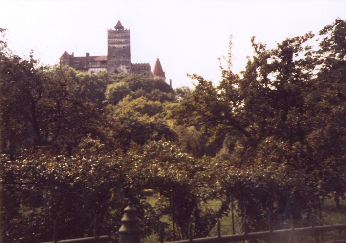
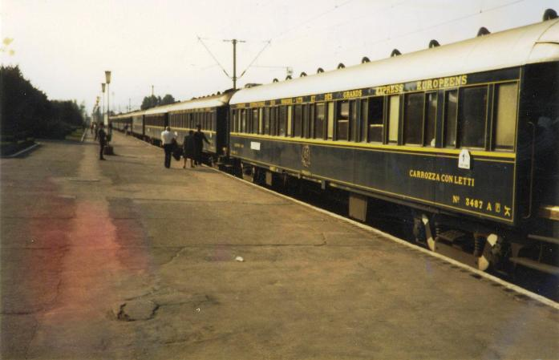

Inter Rail 1984 Day 11
Wednesday 12th September 1984
Woke up when the alarm went off at 7.30am! Gradually woke/got up. Smuggling Anne out proved relatively easy as
Jon and I stood in front of the new door man who didn't see a thing. After a quick platform change we caught a double decker train to Risnov.
We were only supposed to go one stop but the first time the train stopped and people got off we were not in a station.
We were delivering workers directly to the fields. This particular field was a field of potatoes which were being picked by hand. We
immediately thought of strawberry picking i.e. one for me one, for the sack, but then realised that the soldiers with Kalashnikovs who were
situated at the field corners probably kept pilfering to a minimum.

When the train stopped for a second time we could see no station, so thought we were stopping at another field but at the last minute we
realised we were in Risnov station. Yet again no platforms! We piled off the train but our tardiness meant we had missed the bus to Bran Castle.
The next bus was not due until 1.00pm so our thoughts turned to hitching a lift.
A little Romanian offered us a lift, so our packs went into the back of his lorry, and we all piled into the cab at the front. The guys were
after Western cigarettes but Jon only had Romanian. Anne "paid" for our journey by giving them an old boiled sweet each, plus a box of matches
with "I love Australia" on it. They both carefully unwrapped their sweets, gave them a lick, and with massive smiles pocketed them for later
consumption. I don't think they'd tasted that amount of sugar in absolutely ages.
They dropped us off in Bran and we wandered up to the local castle which is marketed as being Dracula's castle. From the road it seemed quite
impressive but up close, less so. There were a few souvenir stalls around but nothing like there would have been had we been in the West. We
were supposed to pay 10 lei for the priviledge of taking photos but only Anne got collared at the end.
The castle itself was small but appeared to be quite cosy. We got sandwiched between a party of Romanians and a party of French-speaking types
who were Canadian tourists. The fact that I was wearing my Vancouver, Canada T-Shirt caused a bit of confusion and we only just managed to
escape from a long conversation with an American couple.
We lurked at the back of the French-speaking types and listened in to their tour guides blurb. She claimed, at least as far as my school girl
french translation allowed, that Vlad the Impaler had lived in the castle between 1456 and 1462. The Dracula link was said to be because his
henchmen used whips with 2 metal prongs at the end, and they used to kill their victims by whipping them in the jugular with the result that
they bled to death, and were left with two small puncture wounds in their neck.
Further research when back home suggests that this was a load of bollocks. Bram Stoker apparently had never heard of Bran Castle, and Vlad Tepes,
ruler of Wallachia and sometimes known as Vlad the Impaler, never lived there. Good marketing ploy though.
At the bottom of the hill was a small open air museum park exhibiting traditional Romanian peasant structures from across the country. We had
our lunch in the grounds, using the tables and chairs of the local restaurant. Missed the 1pm bus back to Brasov. We approached about
exchanging some dollars at a really good rate but a) we didn't have any and they didn't fancy sterling and b) we thought it might be a sting
operation.

We eventually found the local bus stop and decided to wait 20 minutes for the next bus to Brasov. The bus arrived 30 minutes late. It was very
full but we just shoved our baggage into the hold and got on. We didn't have tickets and the driver didn't seem to want our money so we ended
up not paying. Mind you, we had to stand most of the way ie about 10-15 minutes. An interesting journey shall we say.
Got off the bus in Brasov and caught the 10 trolleybus to the train station. We found out what time the train left and when to try to and get
a reservation. Sat in the restaurant and had a drink. There was some confusion about tokens and bottle deposits. Very strange drinks. Whilst
we were sat in the restaurant, the Orient Express pulled in. It's an absolutely gorgeous train with leather seats, potted plants and a
piano in the restaurant car. All the stewards and the head waiter were wearing uniforms.
It had arrived to pick up two coach loads of Americans who had been on a Transylvanian day trip. Before they did so I got on board to have a
shuftie so I can say I have been on the Orient Express. I wasn't on board long before being shouted out and unceremoniously turfed off.
It was definitely better than the so called Orient Express we rode on between Austria and Budapest!
We decided to plan or should I say replan our route home. The itinery is now changed practically 100% and includes a day trip to Monaco! In
the last 10 days only two nights have to be spent in accomodation of some sort, the rest on trains. We now get home on Saturday night not
Sunday afternoon so I might make it to the Giro for Monday morning.
Anne left on the 21.15 train to Budapest having given me some Italian lira to cover the cost of sending some pictures to her in case her's
didn't come out. We had a salad meal - cucumber (disgusting), tomato (very seedy), peppers (very strange), meat (actually delicious), boiled
egg and Feta Cheese (very salty but very tasty). Had a wander round, bought our reservations and sat on platform 3.
After 30 minutes the announcements started and we eventually ended up running up and down to every platform when a train arrived as it became
impossible to know which platform we were supposed to be waiting on. Eventually, 1 hour late, our train arrived on Platform 1. We had to shift
a drunken soldier from our reserved seats. Spent about 30 minutes chatting to an English speaking Romanian couple. We attempted, with little
success, to get some sleep. Very uncomfortable seats to try and sit and sleep in.